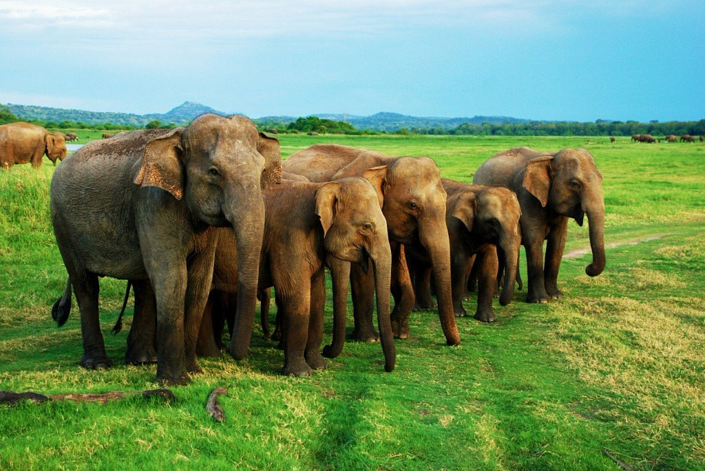

Noted as a national heritage wilderness area on October 21st 1988, the majority of the area within the property was originally declared a forest reserve on May 3rd 1875, providing a long history of protection. The property is afforded the highest level of legal protection under the National Heritage and Wilderness Area Act of Sri Lanka. Click here for more info
| Park / Reserve | Specialty | Location |
|---|---|---|
| Sinharaja | Rain forests | Dodammuluwa |
| Horton Plains | Rolling hills | Dayagama |
| Minneriya | Elephants | Minneriya |

Horton Plains is located on the southern plateau of the central highlands of Sri Lanka. The peaks of Kirigalpoththa (2,389 m (7,838 ft)) and Thotupola Kanda (2,357 m (7,733 ft)), the second and the third highest of Sri Lanka, are situated to the west and north respectively. Click here for more info

Where is Minneriya park?: North Central of Sri lanka
Nearest Town: Habarana
When to visit?: Throughout the year, but best in August to September
Park opening hours: 6 Am to 6.30 Pm
What i should bring?: A Hat or cap / Sun protection cream / Dust musk / Water / Camera
Click here for more info
Things to know before travelling...
Click here for more info
Image from: Department of Wildlife Conservation